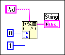

The format string wired to this node does not have enough format specifiers (% codes) to match all of its parameters.
Although the node in the block diagram above has two input terminals, the format string %d indicates that there should be one numeric input.
To correct this error, unwire any terminals you do not need. You can resize the node to give it the number of input or output terminals needed.
Alternatively, you can add format specifiers, so that you have one for each input or output.